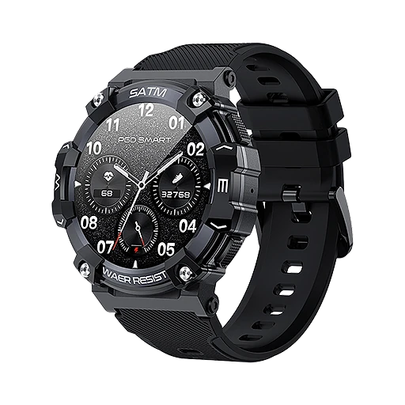

Was ist Vantrek X1 und wie funktioniert es?
Die Vantrek X1 ist eine robuste Smartwatch, die laut der offiziellen Website vor allem mit einer langen Akkulaufzeit wirbt. Nach Angaben des Herstellers hält eine Akkuladung je nach Nutzung und Einstellungen 15 bis 21 Tage. Auf der Bestellseite wird sie als robuste Smartwatch mit wochenlanger Akkulaufzeit beschrieben, gedacht für Menschen, die viel unterwegs sind, Sport treiben oder einfach nicht jeden Abend ein Ladegerät suchen möchten.
Die Uhr wird per Bluetooth mit dem Smartphone verbunden und ist laut Website mit iOS und Android kompatibel. Danach können Sie Anrufe direkt am Handgelenk annehmen und tätigen, Benachrichtigungen empfangen, das Wetter abrufen, Musik und die Smartphone-Kamera fernsteuern und Ihr Telefon über die Funktion „Smartphone finden“ orten.
Für Sport und Gesundheit bietet die Vantrek X1 nach Angaben des Herstellers mehrere Sportmodi, einen Schrittzähler, Schlafüberwachung und Atemtraining sowie die Messung von Herzfrequenz, Blutsauerstoff und Blutdruck. Die Website weist ausdrücklich darauf hin, dass diese Funktionen nur der allgemeinen Gesundheits- und Fitnessüberwachung dienen und nicht für medizinische Zwecke bestimmt sind.
Das Gehäuse ist laut Hersteller robust aus Kunststoff gebaut, und die Uhr soll zum Schwimmen geeignet sein. Auf den Produktbildern wird sie als stoßfest, staubdicht und nach IP68 wasserdicht beworben. Das Display ist ein 1,39 Zoll großer Touchscreen, das Armband aus Silikon mit einem modernen Verschluss. Laut Website gibt es sechs verschiedene Zifferblatt-Designs zur Auswahl, und neben dem Touchscreen lässt sich die Uhr auch über eine Taste bedienen.
Zur Einordnung: Die Blutdruck- und Blutsauerstoffwerte einer günstigen Smartwatch sind Schätzungen und ersetzen kein geprüftes Messgerät. Wer solche Werte aus gesundheitlichen Gründen kontrollieren muss, sollte sich auf ein medizinisches Messgerät verlassen. Für Training und Alltag können sie dennoch eine nützliche Orientierung sein.
Vantrek X1 Funktionen
Laut den Produktspezifikationen und den häufig gestellten Fragen auf der offiziellen Website bietet die Vantrek X1:
Display: 1,39-Zoll-TFT-Touchscreen, Bedienung per Touchscreen und Taste, sechs anpassbare Zifferblätter.
Akku: 300 mAh, 15 bis 21 Tage Laufzeit pro Ladung, magnetisches Ladegerät.
Verbindung: Bluetooth mit 5 bis 10 Metern Reichweite, kompatibel mit iOS und Android, Bluetooth-Anrufe.
Gesundheit und Sport: Herzfrequenz, Blutsauerstoff, Blutdruck, Schlaf, Atemtraining, mehrere Sportmodi, Schrittzähler, Zyklus-Tracking.
Alltag: Benachrichtigungen, Wetter, Smartphone finden, Musik- und Kamera-Fernsteuerung, Nicht-stören-Modus, Wecker, Stoppuhr, Timer.
Bauweise: Kunststoffgehäuse in robuster Bauweise, Silikonarmband mit modernem Verschluss, zum Schwimmen geeignet; laut Werbebildern nach IP68 wasserdicht, stoßfest und staubdicht.
Angaben zum Gewicht, zur Gehäusegröße oder zu einer GPS-Funktion macht die Website nicht. Prüfen Sie die Details nach der Lieferung in der Bedienungsanleitung.
Auf den Werbebildern der Website werden die Eigenschaften so zusammengefasst: 21 Tage Akku, Bluetooth-Anrufe, robust und wasserdicht, Gesundheits-Tracking und viele Sportmodi. Ein weiteres Bild nennt 21 Tage Nutzung und 30 Tage Standby sowie magnetisches Laden. Die Bilder zum robusten Aufbau sprechen von einer stoßfesten und staubdichten Bauweise, die auch extreme Temperaturen aushalten soll.
Vantrek X1 Anwendung
Nach dem Auspacken laden Sie die Uhr mit dem magnetischen Ladegerät auf und verbinden sie anschließend per Bluetooth mit Ihrem Smartphone. Laut Website funktioniert das mit iOS und Android; die Reichweite der Verbindung liegt bei etwa 5 bis 10 Metern. Danach können Sie Anrufe, Benachrichtigungen und die übrigen Funktionen nutzen.
Die Akkulaufzeit von 15 bis 21 Tagen hängt laut Hersteller von Nutzung und Einstellungen ab. Häufige Anrufe, eine hohe Displayhelligkeit und viele Benachrichtigungen verkürzen die Laufzeit erfahrungsgemäß. Wer möglichst lange ohne Aufladen auskommen möchte, sollte nur die Funktionen aktivieren, die er wirklich braucht.
Zum Wasser schreibt die Website, dass die Uhr mit Schwimmbad, Dusche, Regen und Schweiß zurechtkommt. Heißes Wasser, also zum Beispiel Sauna oder heiße Dusche, und Hochdruck-Wasserstrahlen sollten laut Hersteller vermieden werden.
Allgemeine Hinweise: Tragen Sie das Armband nicht zu fest, damit die Sensoren auf der Rückseite gut aufliegen, die Haut aber nicht gereizt wird. Reinigen Sie Armband und Rückseite regelmäßig, besonders nach dem Sport. Gesundheitswerte dienen nur der Orientierung; bei Beschwerden wenden Sie sich an einen Arzt.
Nützlich im Alltag sind laut Website außerdem der Nicht-stören-Modus für die Nacht, der Wecker sowie Stoppuhr und Timer für das Training. Die Zifferblätter lassen sich an den eigenen Geschmack anpassen.
Vantrek X1 – Rückerstattung
Laut der offiziellen Website gilt eine 30-tägige Geld-zurück-Garantie. Wenn Sie mit der Vantrek X1 nicht zufrieden sind, können Sie sie innerhalb von 30 Tagen nach Erhalt zurücksenden und über den Kundenservice eine Rückerstattung oder einen Umtausch anfordern.
Die Rückgaberichtlinie des Verkäufers beschreibt die Bedingungen genauer. Zuerst kontaktieren Sie den Kundenservice per E-Mail, es gibt eine eigene Adresse für deutschsprachige Kundinnen und Kunden. Die Ware muss sich im Originalzustand befinden, mit Originalverpackung und sicher verpackt. Zurückgeschickt wird an die Adresse, die der Kundenservice nennt, und für die Erstattung braucht der Verkäufer die Sendungsnummer der Rücksendung. Rücksendungen nach Ablauf der 30 Tage werden laut Richtlinie abgelehnt.
Auf der Bestellseite wird zusätzlich eine kostenpflichtige Versicherung angeboten, die das Produkt zwei Jahre lang absichern soll. Diese ist freiwillig; prüfen Sie vor dem Abschluss, ob Sie sie wirklich brauchen. Für Verbraucher in der EU gelten ohnehin die gesetzliche Gewährleistung und das gesetzliche Widerrufsrecht von 14 Tagen.
Der Standardversand dauert laut Website je nach Standort 5 bis 12 Werktage. Verkäufer ist laut Impressum die Label Products B.V. mit Sitz in Helmond in den Niederlanden. Bewahren Sie Ihre Bestellbestätigung und die Originalverpackung auf. Nach dem Versand erhalten Sie laut Website eine E-Mail mit einer Sendungsverfolgungsnummer und einem Link zum aktuellen Versandstatus.
Vantrek X1 – Wo kaufen?
Die Vantrek X1 wird über die offizielle Bestellseite get-vantrekx1.com verkauft. Dort finden Sie die Funktionen, die Produktspezifikationen, die häufig gestellten Fragen, die Kundenbewertungen und die Angebote mit einer, zwei oder drei Uhren. Zwei Kundinnen und Kunden werden dort ausführlich zitiert: Maria M. lobt, dass sie die Uhr beim Schwimmen nicht abnehmen muss, und Stefan H. hebt hervor, dass er fast drei Wochen ohne Aufladen auskommt.
Robuste Smartwatches mit ähnlichem Aussehen gibt es von vielen Anbietern. Bei Angeboten auf Marktplätzen ist nicht sicher, ob es sich um dasselbe Modell handelt, und die 30-Tage-Garantie des Verkäufers gilt dort in der Regel nicht.
Achten Sie beim Besuch darauf, dass die Adresse get-vantrekx1.com lautet. Die Bestellseite arbeitet mit Aktionscodes, einem Countdown und zusätzlichen Angeboten, etwa einer Versicherung oder weiteren Uhren nach dem Kauf. Lesen Sie die Bestellübersicht deshalb genau, bevor Sie die Bestellung abschicken, und achten Sie darauf, dass nur die gewünschte Anzahl an Uhren und keine ungewollte Versicherung im Warenkorb liegt.
Um sicherzugehen, dass Sie das Originalprodukt erhalten, besuchen die meisten Nutzer die offizielle Website.
Ist Vantrek X1 Betrug?
Nach den verfügbaren Informationen gibt es keinen Hinweis darauf, dass die Vantrek X1 Betrug ist. Die Uhr wird über eine Bestellseite mit Produktspezifikationen, häufig gestellten Fragen, Rückgaberichtlinie und Impressum verkauft. Verkäufer ist laut Impressum die Label Products B.V. aus Helmond in den Niederlanden, mit Handelsregisternummer und Umsatzsteuer-Identifikationsnummer.
Positiv sind die konkreten technischen Angaben, die 30-tägige Geld-zurück-Garantie, ein deutschsprachiger Kundenservice per E-Mail und der klare Hinweis, dass die Gesundheitsfunktionen nicht für medizinische Zwecke bestimmt sind.
Es gibt aber Punkte, die Aufmerksamkeit verdienen. Die Werbung spricht von 21 Tagen Akkulaufzeit, die Spezifikationen von 15 bis 21 Tagen. Die Produktbilder zeigen zwei unterschiedliche Zifferblatt-Designs. Angaben wie „12.421 verifizierte Kundenbewertungen“ lassen sich nicht überprüfen, und die Bestellseite arbeitet mit Countdown, Aktionscodes und Zusatzangeboten.
Vorsicht ist außerdem bei Angeboten außerhalb der offiziellen Website geboten, denn dort gilt die Garantie des Verkäufers in der Regel nicht.
Laut Impressum gehört die Marke zum Umfeld der Label Products B.V., die über dieselbe Plattform auch andere Geräte verkauft; im Fußbereich der Bestellseite steht als Urheber der Name Veneora. Wie bei jedem günstigen Gerät dieser Art sollten Sie realistische Erwartungen haben, besonders bei den Gesundheitswerten. Wer die Bedingungen kennt und direkt auf der offiziellen Website bestellt, geht nach heutigem Stand kein besonderes Risiko ein.
Wer Produktdetails überprüfen oder die aktuelle Verfügbarkeit prüfen möchte, ist auf der offiziellen Vantrek X1-Website am sichersten aufgehoben.